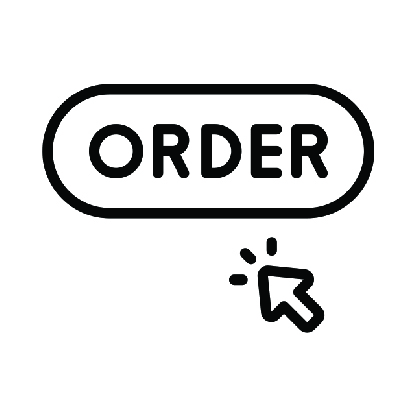

ภาพรวมระบบและขั้นตอนการทำงาน (Workflow Lifecycle)
ลำดับการทำงานมาตรฐานในการสร้าง 3D และถอดรายการสั่งซื้อบานประตู-หน้าต่างล่วงหน้า
กฎเหล็กสำคัญที่สุดของระบบ LongleadTime:
- การทำงานต้องเรียงลำดับจากซ้ายไปขวา: CAD → Unit Number → Door-Window → Door3D เสมอ เพื่อให้ชิ้นงานมีข้อมูลกริดและพิกัดยูนิตรองรับ
- ก่อนรันคำสั่ง Door3D ต้องตรวจสอบให้แน่ใจว่าได้รัน Unit Number แล้ว (มีกลุ่มยูนิตในเลเยอร์
S-Unit) - ก่อนกดสั่งออกรายงาน CSV ใดๆ กรุณา ปิดไฟล์ Excel ที่เปิดค้างไว้ทั้งหมด เพื่อป้องกันข้อผิดพลาดไฟล์ถูกล็อก
นำเข้าแปลน CAD & ตั้งชื่อยูนิต
กด Insert CAD เพื่อนำเข้าเส้นกริดลงเลเยอร์ EE-GRID-UNIT แล้วรัน Unit Number เพื่อผูกกลุ่มยูนิต S-Unit
ซิงค์ชื่อบาน 2D
กด Door-Window เพื่อตรวจสอบและซิงค์ชื่อ Definition Name และ Instance Name ของบล็อกบนเลเยอร์ A-WIND / A-DOOR
สร้างชิ้นงาน 3D อัตโนมัติ
กด Door3D ระบบจะจับคู่ SQL Database วาง 3D ลงในเลเยอร์ 3D-WINDOWS / 3D-DOORS พร้อมกล่องรายงานผล
บันทึก Rev & เปรียบเทียบสั่งของ
กด NewRev เพื่อบันทึก Snapshot (LLT-R1, R2...) และกด Order เพื่อเปรียบเทียบผลต่างออกใบสั่งผลิตล่วงหน้า
หน้าต่างเมนูควบคุม (UI Toolbar Controller)
แถบเครื่องมือ HTML Dialog: C:\QHeim\Ruby\Longleadtime\Heim_Longleadtime.html
| ไอคอน | ชื่อคำสั่ง (Tool Title) | ไฟล์ Ruby ที่ประมวลผล | หน้าที่หลัก |
|---|---|---|---|
|
|
Insert CAD | Heim_InsertCAD.new | นำเข้าไฟล์ CAD DWG จากโฟลเดอร์โครงการ และจัดระเบียบเลเยอร์กริด EE-GRID-UNIT |
|
|
Unit Number | Heim_Unitname.new | ระบุชื่อยูนิตลงเลเยอร์ S-Unit และวางตำแหน่งท่อ Hood ดูดควันตามไฟล์อ้างอิง |
| Door-Window | Heim_DoorName.new | ตรวจสอบความสอดคล้องของชื่อ Definition และ Instance บล็อก 2D บน A-WIND / A-DOOR |
|
| Door3D | Heim_ExDoor3D.new | ค้นหา MIM ใน SQL, ดึง 3D Component, จัดทิศทางวงเปิด, ชดเชยระดับ NOTATAKI (+195mm) และรายงานผล | |
|
|
Check Data | StrucTemplate.takeoffdialog | เปิดหน้าต่าง HTML Dialog สรุปตาราง Takeoff ชิ้นงานทั้งหมดในโมเดลเทียบฐานข้อมูล SQL |
| Export To Layout | ExportLLT.quanexport | ถอดแบบแยกตามหมายเลขยูนิต สรุปข้อมูลลงไฟล์ takeoffwind.csv และเปิด Excel |
|
|
|
Export CSV | ExportLLT.fileupexport | ส่งออกไฟล์ฟอร์แมต ERP lltfileup.csv ระบุ Station, Method และ Place ครบถ้วน |
| Save revision (NewRev) | KeepVersion.keepcurrent | บันทึกสำเนาโมเดล .skp, ค่าปริมาณ lltquan.json และ takeoffllt.csv แยกตามโฟลเดอร์ LLT-R1, R2... |
|
|
 |
Export extra order request | ExportLLT.comparepart(true) | เปรียบเทียบชิ้นงานกับเวอร์ชันล่าสุด คำนวณผลต่าง (+ / -) และกรองเฉพาะบานเลื่อน 4 บาน (S4) ลง takeoffllt.csv |
คู่มือขั้นตอนการกดใช้งานแต่ละไอคอน (สำหรับคนทำงาน)
สรุปขั้นตอนการปฏิบัติงานจริง วิธีการครอบเลือกวัตถุ, การกดปุ่ม และสิ่งที่ระบบสร้างให้ในโมเดล
D:/00_QHeim_Work/...
EE-GRID-UNIT, เคลียร์ส่วนซ่อน และ Zoom Extents
S-Unit, วางตำแหน่ง Hood ดูดควัน และเปิดเลเยอร์ text_door
A-WIND / A-DOOR ให้ตรงกับ Definition และเปิดป้ายชื่อบาน
3D-WINDOWS / 3D-DOORS (ปรับชดเชย NOTATAKI +195mm) พร้อมแสดง Popup สรุปผล
3D-WINDOWS / 3D-DOORS
C:/QHeim/takeoffwind.csv แยกรายยูนิตและเด้งเปิด Excel
C:/QHeim/lltfileup.csv โครงสร้าง ERP (Unit ="01", AAJO Method 2) และเปิด Excel
LLT-R1, R2... สำเนา .skp, lltquan.json และ takeoffllt.csv ไว้อ้างอิง
takeoffllt.csv คำนวณยอด Add/Close, กรองมือจับเฉพาะบานเลื่อน 4 บาน (S4) และเปิด Excel
ตรรกะการทำงาน Door3D และระบบแจ้งเตือน (Notification Logic)
การค้นหา MIM, การหมุนวงเปิด, การยกชดเชยระดับ และรูปแบบหน้าต่างแจ้งเตือน
🔍 ตรรกะการค้นหา MIM ในฐานข้อมูล SQL (findIMfromDb):
- ตัดคำขยายที่ไม่เกี่ยวข้อง:
(FT),SLITSHUTTER,TATAKI,NOTATAKI - กรณีหน้าต่าง TOP3 (Fallback Matching 3 ระดับ):
- เทียบ Base Target + มี Lock/Crescent, Frost, IGU ครบทุกตัว
- เทียบ Base Target + Lock/Crescent + Frost (ผ่อนปรน IGU)
- เทียบ Base Target หลัก
- กรณีประตูทางเข้า (Entrance Tostem): รองรับขนาด 1380 และ 1800 โดยหากเป็น 1800 จะตัดตัวอักษรบอกทิศทาง L/R ท้ายชื่อออก
📐 การคำนวณองศาหมุน & ชดเชยระดับ NOTATAKI:
ตรวจสอบแนววงเปิดจาก ArcCurve หรือกึ่งกลางยูนิต:
Right: +90° | Left: -90°
Top: 180° | Bot: 0°
Right: -90° | Left: +90°
Top: 0° | Bot: 180°
NOTATAKI ชิ้นงานจะถูกยกขึ้นในแนวแกน Z เป็นระยะ +195 mm ทันที
💬 รูปแบบหน้าต่างแจ้งเตือนสรุปผล (UI Dialog Preview):
* ระบบจะรวมทุกปัญหาแจ้งเตือนในหน้าต่างเดียว ไม่แสดงหน้าต่างซ้ำซ้อนให้รบกวนคนทำงาน
ตรรกะการคำนวณ Extra Order & เงื่อนไขกลุ่ม AAJO
การเปรียบเทียบเวอร์ชัน (ΔQ), กฎการคัดกรอง Whitelist และเงื่อนไขบานเลื่อน 4 บาน (S4)
📐 หลักการเปรียบเทียบผลต่าง (Delta Comparison):
เมื่อรันคำสั่ง Export extra order request ระบบจะนำโมเดลปัจจุบันไปเปรียบเทียบกับ lltquan.json ของโฟลเดอร์ Revision ล่าสุด:
Add/Close Demand = "Add" โดยระบุ Qty เท่ากับจำนวนที่เพิ่มขึ้นจริง
Add/Close Demand = "Close" โดยระบุ Qty ที่เป็นบวกเพื่อส่งเรื่องขอยกเลิก
กฎพิเศษเฉพาะกลุ่ม AAJO (Curve Handles & Crescent Lock):
เพื่อความถูกต้องของสายการผลิต ระบบมีการล็อกสเปกอุปกรณ์กลุ่ม AAJO อย่างเข้มงวดดังนี้:
AAJO10360, AAJO10370,
AAJO10380, AAJO10390,
AAJO10400
S4 ระบุอยู่ในชื่อบานหรือชื่อ MIM เท่านั้น หากเป็นบานชนิดอื่นจะถูกข้าม
S4): จ่ายคู่รหัส AAJO01470 + AAJO01480• บานเลื่อน 2 บาน (
S2): จ่ายเฉพาะ AAJO01470
ตารางสรุปเลเยอร์ ฐานข้อมูล และรายการส่งออก (Data Matrix)
โครงสร้างเลเยอร์ใน SketchUp, รหัสวัสดุ MIM และรายละเอียดไฟล์ที่ระบบสร้างขึ้น
📂 เลเยอร์ในโมเดล SketchUp (Layer Schema)
| ชื่อ Layer ใน SketchUp | ประเภทข้อมูล | บทบาทและหน้าที่ |
|---|---|---|
| EE-GRID-UNIT | Component / Lines | เก็บเส้นกริดอ้างอิงยูนิตที่นำเข้าจากไฟล์ CAD AutoCAD |
| S-Unit | Group | กลุ่มขอบเขตยูนิต ใช้ระบุและค้นหาว่าบานประตูหน้าต่างสังกัดยูนิตใด |
| A-WIND / A-DOOR | Component 2D | บล็อกสัญลักษณ์แปลน 2D ต้นฉบับจากสถาปัตย์ |
| 3D-WINDOWS | Component 3D | ชิ้นงานโมเดล 3D หน้าต่างจริงที่ระบบนำมาวาง |
| 3D-DOORS | Component 3D | ชิ้นงานโมเดล 3D ประตูจริงที่ระบบนำมาวาง |
| text_door / text_room | 3D Text / Groups | ข้อความและป้ายกำกับแสดงชื่อสัญลักษณ์บานและชื่อห้อง |
🏷️ หมวดหมู่รหัสชิ้นงานในระบบ (MIM Prefix Matrix)
| รหัสกลุ่ม (Prefix) | รายละเอียดชิ้นงาน | สถานีการผลิต (Station) | รหัสงาน (Task Code) |
|---|---|---|---|
| AAJA | วงกบหน้าต่าง (Window Frame) | SL-WF | 2035 |
| AAJC | กรอบบานหน้าต่าง (Window Sash) | SL-WS | 2090 |
| AAJM / AAJS | เสากลาง / บานหน้าต่างระบายอากาศ | SL-WS / SL-WF | 2090 / 2035 |
| AAJU | กรอบบานตาย (Fixed Frame) | SL-WF | 2035 |
| AAJP | กระจกหน้าต่าง (Glass Panel) | SL-WS | 2090 |
| AAKI / AAKJ | อุปกรณ์ชุดยึดและบานพับหน้าต่าง | SL-WS | 2090 |
| AAJE / AAJB | วงกบและกรอบบานประตูระเบียง | SL-WF / SL-DF | 2035 / 2082 |
| AAJO | อุปกรณ์มือจับและชุดล็อก (Curve Handle เฉพาะ S4) | SL-WS | 2090 |
| AAJI | มุ้งลวดกันแมลง (Screen) *(ส่งออกเมื่อ HaveScreen = true)* | ST-SP | 2887 |
แนวทางแก้ไขปัญหาที่พบบ่อย (Troubleshooting Guide)
วิธีจัดการเมื่อพบข้อผิดพลาดระหว่างการทำงานจริง
❌ Error. ...csv already open. please close file
สาเหตุ: ไฟล์ CSV กำลังถูกเปิดค้างอยู่ในโปรแกรม Excel ทำให้ SketchUp ไม่สามารถเขียนทับไฟล์ได้
วิธีแก้: ปิดหน้าต่าง Excel ของไฟล์นั้นก่อน แล้วกดย้อนกลับมารันคำสั่งเดิมใน SketchUp ซ้ำอีกครั้ง
⚠️ ไม่พบ MIM ใน (database) : X แบบ
สาเหตุ: รหัสบาน 2D ในโมเดลไม่ตรงกับฐานข้อมูล SQL tbmim (เว้นวรรคผิด หรือเป็นบานรุ่นใหม่)
วิธีแก้: ตรวจดูชื่อ Definition ใน Entity Info และแจ้งประสานงานเพิ่ม MIM ลงในตารางฐานข้อมูลกลาง
⚠️ ไม่พบ 3D ใน (File ปั้น Component): X บาน
สาเหตุ: มีรหัสในฐานข้อมูล แต่ยังไม่มีชิ้นงาน 3D ในไฟล์แม่แบบ LongLeadTime Component.skp
วิธีแก้: เปิดไฟล์แม่แบบดังกล่าว ปั้นโมเดลชิ้นงานและตั้งชื่อ Definition ให้ตรงกับรหัส MIM จากนั้นบันทึกไฟล์
⚠️ ไม่พบตำแหน่ง Grid Unit: X รายการ
สาเหตุ: บานประตูหน้าต่างไม่ได้อยู่ภายในขอบเขตของกลุ่มยูนิตในเลเยอร์ S-Unit
วิธีแก้: ตรวจสอบว่าได้รันคำสั่ง Unit Number หรือยัง และขยับบานให้เข้าชิดผนังของยูนิตนั้นๆ